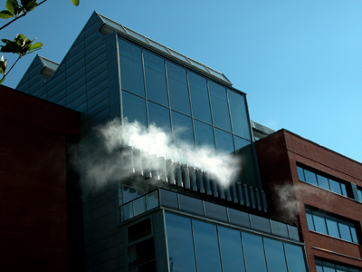

InSite Arts was appointed to assist the University of Wolverhampton to fulfill their planning obligations resulting from Wolverhampton City Council's Percent for Art Policy. The commission was initiated near to completion of the development and this offered to the artists exceptional challenges to make a work integral to the building with little potential for changes to building specifications. Lulu Quinn and Julie Westerman rose to the challenge and create an interactive work, utilising steam and light to reflect the temperature of the building.

The work consists of twenty stainless steel pipes set in a row along the zinc facade below a two storey glass window. The pipes contain animated white light and emit illuminated puffs of white steam that are programmed to reflect on the academic, social, cultural and environmental temperature creating an animated light and water display running through all twenty pipes.